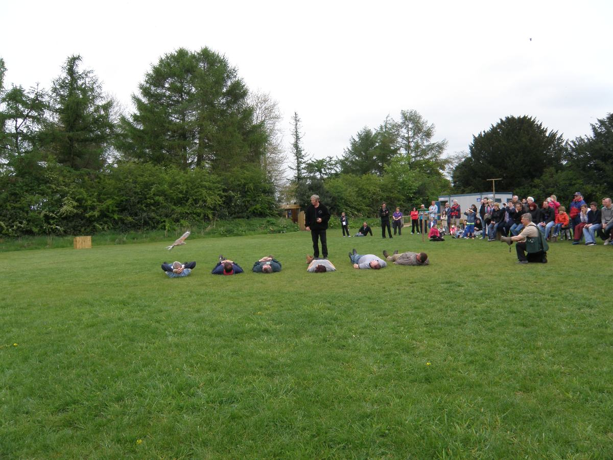
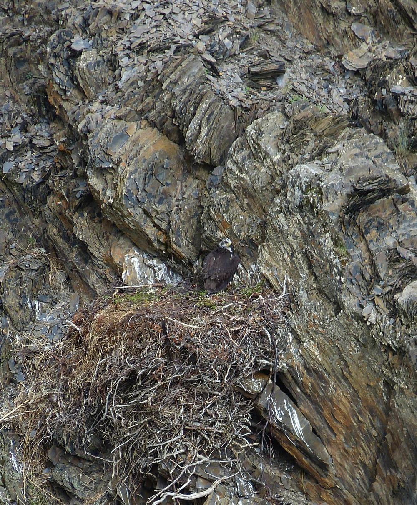
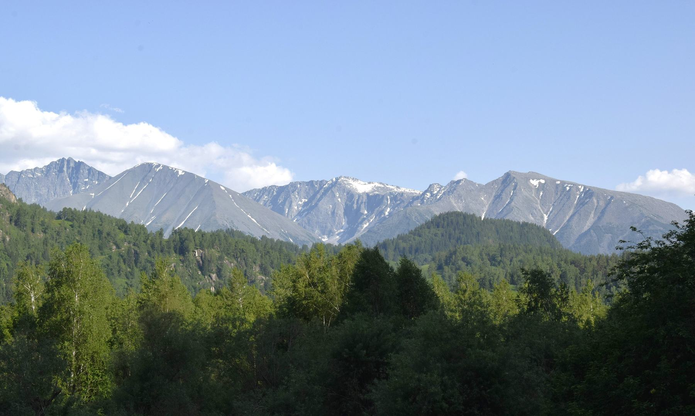
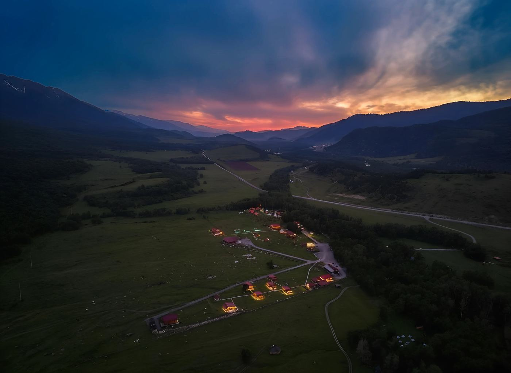

Guided tour
1 hour · 2 000 ₸
The nine residents, the flight corridor from the outside, and the story of every bird. Ends at the weighing table.
Home › Visit
Open Friday to Sunday
An hour with a falconer, nine birds that will never go back to the wild, and the whole story of why they are here. Forty minutes from Berel on a road that is open from May to October.
Hours and tickets
The centre is a hospital six days a week, so visits happen only on the three days when the vet is in the village and the hospital block is closed.
| Day | Open | Guided tour | Adult | Student |
|---|---|---|---|---|
| Monday – Thursday | Closed. Treatment days, no visitors in the aviaries. | |||
| Friday | 10:00 – 17:00 | 11:00, 15:00 | 2 000 ₸ | 1 000 ₸ |
| Saturday | 10:00 – 17:00 | 11:00, 13:00, 15:00 | 2 000 ₸ | 1 000 ₸ |
| Sunday | 10:00 – 15:00 | 11:00 | 2 000 ₸ | 1 000 ₸ |
| School groups | Any day by appointment | Free for the district | ||
| Children under seven come free with an adult. The road from Berel is closed by snow from November to April, and in those months we bring the programme to the schools instead. | ||||
Programmes

1 hour · 2 000 ₸
The nine residents, the flight corridor from the outside, and the story of every bird. Ends at the weighing table.

90 minutes · free for the district
What to do with a chick on the ground, why a dead fox on the road kills eagles, and a live meeting with Tuman.

First Saturday · 6 000 ₸
Six people, two hours, soft light before the groups arrive. A falconer stays with you the whole time.

45 minutes · 1 500 ₸
A bürkitshi explains how a hunting eagle is kept, why it is released after ten years, and what that has to do with us.
Before you come
Cover the bird with a jacket, put it in a cardboard box with air holes, close the box and keep it dark, quiet and warm. No food, no water, no straightening of wings. Then call the rescue line and photograph the place where you found it, because that is where the bird has to go back.
No, and this is the rule we never bend. Patients in the hospital block and in the flight corridor see one human being, the vet, and they see him as little as possible. On the tour you meet the nine permanent residents, who cannot go back to the wild.
No. We are not a falconry show and our birds are not trained for the glove. If you want to hold an eagle, go to the Altai Eagle Festival in October, where the hunters do it properly with their own birds.
From November to April, usually not. The centre keeps working, the birds keep eating, but visits stop. Write to us anyway and we will come to your school with a programme when the road lets us.
How to get here
370 km of good asphalt, about five hours. Buses leave at 08:00 and 14:00.
58 km, one hour. The last 12 km are gravel and fine for any car in summer.
Qarasai street, the last house before the river. Look for the yellow gate and the wind sock.
The place





Booking
One falconer runs the tour and he also feeds eleven birds that morning, so the day has room for three groups and no more.